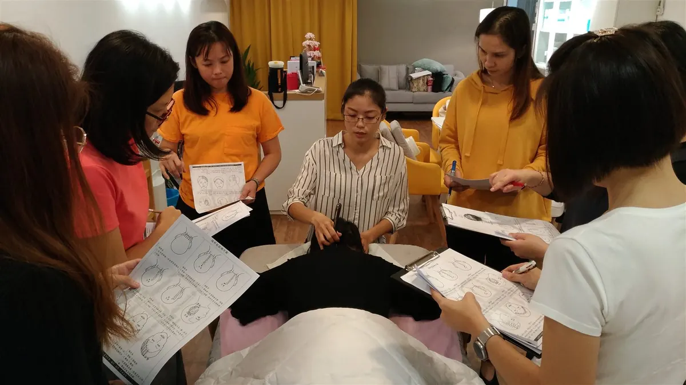
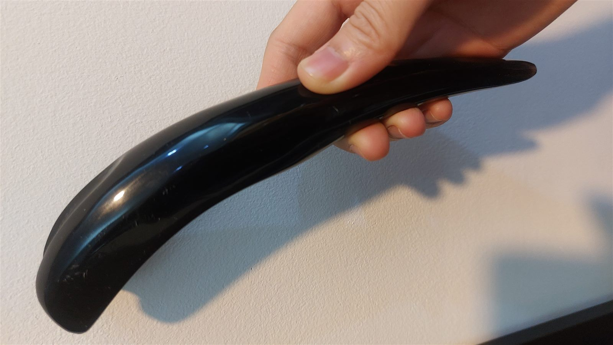

Start here
What is facial bojin?
Bojin (撥筋), also spelled bo jin and often heard as “butin gua,” is a face and neck self-care method from Taiwan. Here you’ll see the steel bojin stick, a 45-second demo, and a 10-second mirror check.
The short answer
Facial bojin (撥筋, bō jīn) is a face and neck self-care method taught by Taiwan-based instructor Yu-Ting Lan. You work one small area at a time, in small, complete circles with the rounded tip of a stainless steel bojin stick or your fingertips, about a minute per side, while your other hand steadies the skin. Pressure stays comfortable. It is gentle self-care, not medical care, and not for broken skin, the eyelid itself, or recently injected areas.
What does “bojin” mean?
“Bojin” comes from the Mandarin 撥筋 (bō jīn). Bō means to part something aside with a small, deliberate motion, and jīn means the body’s sinews and soft tissue. You’ll also see it written bo jin, and English speakers often hear it as “butin gua,” which has nothing to do with gua sha beyond the sound. On this site the word means one thing: the method Yu-Ting Lan teaches.
What do you actually learn?
Yu-Ting teaches three choices you make on every stroke: order (which area comes first), angle (how the tool meets the skin) and position (the exact spot, plus the spots you leave alone). A beginner area takes about a minute per side: small, complete circles moving outward, three passes, with the supporting hand keeping the skin from dragging. These are teaching guidelines from her classes, not a clinical dose.
Pressure: both extremes are wrong
Too heavy can bruise. Too light never reaches the tension. Yu-Ting teaches the middle: enough to reach the tension, never enough to hurt. If it hurts or bruises, stop; pain doesn’t mean it “went deeper.” See the safety guide.
Side by side
Is bojin the same as gua sha?
No. Facial gua sha usually sweeps the broad edge of a flat stone in long strokes across a wide area. Bojin works one small spot at a time with a rounded steel tip, in short, complete circles, with a supporting hand. Think of gua sha as smoothing a whole sheet and bojin as easing one fold. They do different jobs, and neither should bruise your face. Advice written about gua sha, such as Cleveland Clinic’s facial gua sha article, doesn’t automatically apply to bojin.
| Fingertips | Gua sha stone | Bojin stick | |
|---|---|---|---|
| Contact shape | Soft pad, about 1–1.5 cm wide | Flat or curved edge, several cm long | Rounded tip ~3–5 mm, plus a broad edge |
| Movement | Slow circles or gentle presses | Long strokes in one direction | Short, complete circles traveling outward, one spot at a time |
| Time per area | About 1 min per side | Varies by routine | About 1 min per side, three passes |
| Good for | Learning direction; the delicate under-eye area | Broad areas: jaw, neck, cheeks | Small areas: brow line, temple, jaw angle |
| Limits | Spreads pressure; mostly moves the skin surface | Hard to place precisely near the brow | Needs a lesson; never on the eyelid or eyeball |
Sizes and times are teaching guidelines from Yu-Ting Lan’s classes, not clinical measurements. Read the fuller comparison in gua sha and bojin: the tool and the technique, or choose what to hold with the fingers, stone, or stick guide.
Your tool
What is a bojin stick, and do you need one to start?
A bojin stick is a slim, polished stainless steel tool, about 11.4 cm (4.5 in) long and about 43 g, with two working ends: a broad, smooth edge for the forehead, cheeks and neck, and a small rounded tip, roughly 3–5 mm across, for one precise spot along the brow, temple or jaw angle. Steel is easy to clean and doesn’t chip. You don’t need one to begin: clean fingertips teach direction and comfort first. Never use the tip on the eyelid or eyeball.

See it
What does a real bojin demonstration look like?
This 45-second clip from Module 3 of The Bojin Eye Method shows Step 1, above the brow, on the left side. Watch for three things: each movement is one small, complete circle; the circles travel outward to the tail of the brow, where the tool lifts; and she repeats the pass three times.
Step 1, above the brow: small complete circles, three passes (0:45)
Yu-Ting Lan · from Module 3 of The Bojin Eye Method · left side only. Tap a timestamp to jump.
- Set-up. “Step one. Above the brow. Start between the eyebrows. Make each movement one small, complete circle. Then move outward.”
- The rule. “This is not a side-to-side wiggle. One full pass outward counts as one. We will do three. Okay, let’s begin.”
- Pass one. “The starting point is here. First small circle. Keep moving outward. Keep each circle complete. At the tail of the brow, lift.”
- Passes two and three. “Back to the start. Pass two.” … “Pass three.” The same outward circles repeat, ending with a lift at the brow tail.
- Next position. “After the three passes, come to the middle of the brow, about one thumb-width higher.”
“This step isn’t hard. Most students get it right; the only difference is the size of their circles. You want them in between: not too big, not too small.”Yu-Ting Lan, on this step
Try it tonight
How do you try bojin tonight with just your fingertips?
You can try the same step tonight with no tool, in about a minute for one side, using the pads of your index and middle fingers and a little oil or cream. Stop if anything stings, aches or reddens.
Prepare
Clean hands, a little oil or cream, a mirror in even light. Rest your supporting hand flat on the forehead, just above the brow you’ll work.
About 15 secondsCircle outward
Small, complete circles from between the brows to the tail. Lift off at the tail and return to the start. Three passes, light and slow.
About 30 secondsLift & compare
Hands down. Look at both brows and both upper lids. Notice whether the worked side feels lighter or looks more open.
About 15 secondsBefore you go further
Why fingertips stop at the surface
Facial skin is thin: about half a millimeter on the upper eyelid and roughly 1–2 mm across the forehead and cheeks, measured by high-frequency ultrasound (Ha et al., Plast Reconstr Surg, 2005). A light fingertip stroke mostly moves that top layer, which is why it feels pleasant and is safe to learn on. The muscles that hold your expression sit underneath, and pressing harder only drags thin skin. That’s why the method teaches placement and order instead of more force. Find your starting side with the mirror check ↓
10-second self-care observation
Does one side of your face hold more tension? Try the 10-second mirror check
Stand at a mirror in even light, relax your face, and spend about 10 seconds on each check below, comparing left with right. Tick any card where you see a clear difference. This is a self-care observation, and some asymmetry is normal. A difference that appears suddenly, or comes with numbness, weakness or pain, needs a doctor today.
Jaw clicking, locking, or pain when chewing is a question for a dentist; the NIH’s National Institute of Dental and Craniofacial Research explains TMD.
Your next step
Where should you start?
Start with the area your mirror check pointed to. Each guide teaches one line on one area: where it starts, where it ends, and how gently to glide.
- Eyes & BrowsHeavy lids, low brows, screen-tired eyes
- Forehead & ScalpFrown lines, a tight forehead and scalp
- Cheeks & Smile LinesSmile lines, puffy or flat cheeks
- Jaw & ChinTight jaw, pebbly chin, one side fuller
- Neck & Shoulder LineThe side of the neck down to the shoulder line
- Tired-Looking FaceWhole face, sleep, menopause changes
See one step before you choose
In the free 1:18 demo, Yu-Ting works the first step of her eye routine, just above the brow, close up and at real speed.
Ready for the whole eye routine? The Bojin Eye Method ($79) teaches it in step-by-step video lessons.
Straight talk
What can’t bojin do?
Bojin is self-care, not medical care. It won’t remove wrinkles, erase under-eye bags, or do what Botox or filler does, and it isn’t a stronger form of gua sha. Some people say their face feels less held for a while afterward; that’s a personal experience, not a structural change. Skip it on broken, sunburned or inflamed skin, after recent injections or facial surgery, and ask your doctor first if you take blood thinners.
The complete list: what bojin can and cannot do. Had work done? Read what to wait for after Botox or filler and who should skip bojin for now.
Common questions
Bojin questions women ask most
Is “bo jin” or “butin gua” the same thing as bojin?
Yes. They are spelling and hearing variants of the same word, 撥筋 (bō jīn). Bo jin is the usual romanization. Butin gua is how it often sounds to English speakers, and it has no connection to gua sha beyond the sound. On this site, bojin always means the face and neck method taught by Yu-Ting Lan.
Do I need a bojin stick, and what should it look like?
Not to start. Fingertips teach direction and comfort first. If you buy one later, look for polished stainless steel, about 11 cm long, with a broad smooth edge, a small rounded tip of roughly 3–5 mm, and no sharp seams. The tool can't choose placement or pressure for you.
Is bojin safe? Who should skip it?
With comfortable pressure, most healthy adults find it gentle. Skip it during a rosacea flare and on irritated skin, follow your provider's timing after injections or surgery, and never use the tip on the eyelid or eyeball. Pain, bruising or numbness means stop.
How often should I do bojin, and for how long?
Yu-Ting's classes start beginners at about a minute per area, per side, two or three times a week, with rest days between. That's a class starting point, not a clinical dose. Skip a session if your skin feels tender, and judge by comfort and a side-by-side mirror comparison, not by redness.
Sources and further reading
- Ha RY, Nojima K, Adams WP Jr, Brown SA. Analysis of facial skin thickness: defining the relative thickness index. Plast Reconstr Surg. 2005. PubMed 15861089.
- Cleveland Clinic. Gua Sha: Benefits and How To Do It.
- NIH National Institute of Dental and Craniofacial Research. TMD (temporomandibular disorders).
New here? Follow the beginner path, or read the safety guide before you practice.